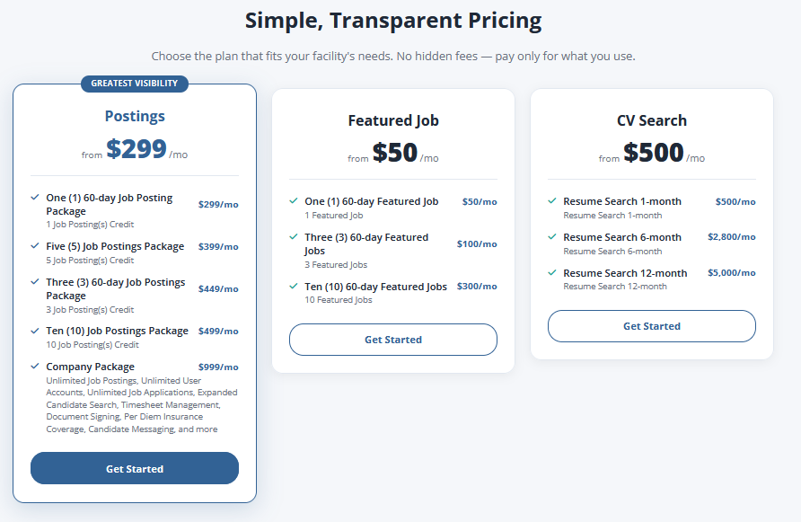

Admin & Analytics
An internal executive/investor metrics dashboard (Nullref.Locumfy.Adminsite) over its own API (Nullref.Locumfy.AdminWebsiteApi + Services.AdminCore) that surfaces platform KPIs and growth, liquidity, revenue, and engagement analytics.
Admin site
:5183)components/charts.jsx (LineChart, BarChart, Funnel, Heatmap) — no charting libraryVITE_ADMIN_API_URL → AdminWebsiteApi (dev :5336)The dashboard presents platform analytics through a consistent, filter-driven UI. Every page fetches
its metrics from the admin API and renders them with the hand-built SVG charts. A global filter bar
(persisted to localStorage) drives date range, granularity, comparison mode, and segment
filters across every view.
Admin API
AdminWebsiteApi shares the same Startup/versioning/Swagger/exception scaffolding as the
public API and the same shared DataContext, but its services
(Services.AdminCore) are heavy read-only analytics that compute windowed vs prior-period vs
year-over-year comparisons directly against EF Core.
| Controller | Route | Purpose |
|---|---|---|
ExecutiveController | executive/summary | KPI tiles, growth line, funnel, activity heatmap, revenue trend, needs-attention |
GrowthController | growth/summary | Registrations/activation, cohort retention, by profession/state, campaign conversion |
LiquidityController | liquidity/summary | Marketplace liquidity: application funnel, jobs posted vs filled, supply/demand, time-to-fill |
LookupController | lookup/{profession|state|candidate-title} | Filter-bar dropdown data |
All summary endpoints take a validated DashboardFilterModel (date range, granularity,
comparison mode, segment filters) from the query string; DashboardBucketing handles
time-bucketing.
Dashboard pages
Eleven sidebar tabs: Executive, Growth, Liquidity, Engagement, Employer Activity, Candidate Supply,
Work & Timesheets (GMV), Revenue, Content & Comms, Operational Health, Investor View. Each reads the
global filter, calls its …/summary endpoint, and renders a KPI grid + charts.


Monetization/product context that the analytics dashboards track (from marketing).
Locumfy platform technical documentation · generated from source analysis · see README for how to keep this current.